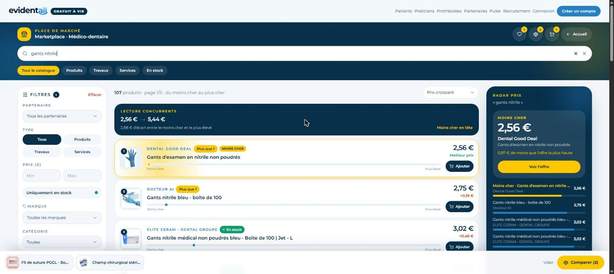
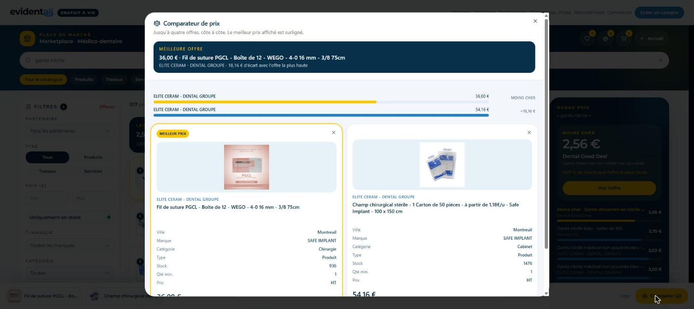
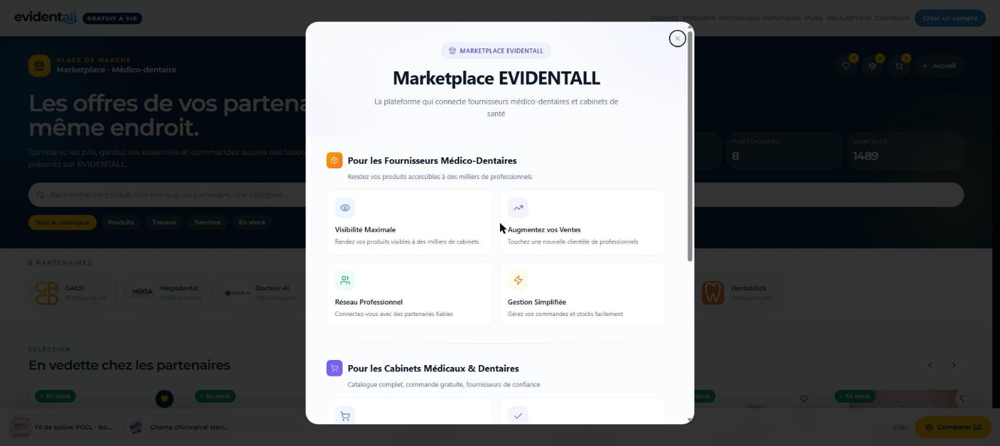
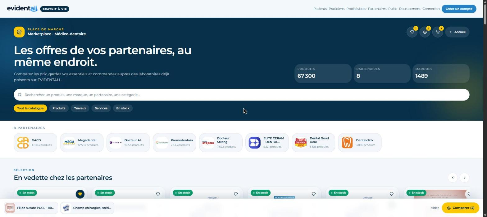
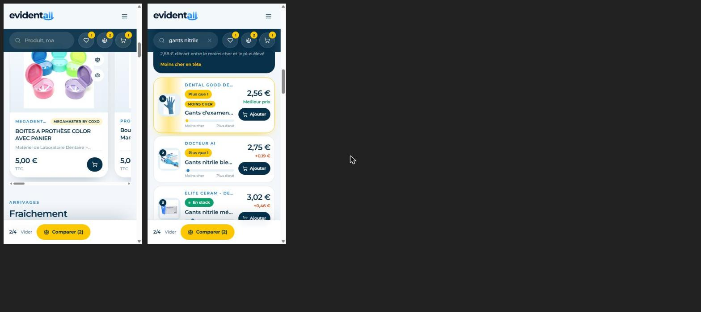

Synthèse
Notes sur 10, fondées sur les constats ci-dessous (bloquants = −3, majeurs = −1, mineurs = −0,5). Elles servent à prioriser, pas à juger : la performance brute est très bonne, le concept de comparaison est juste, mais l'exécution du tunnel d'achat fait perdre la confiance au moment où le cabinet s'apprête à payer.
Deux produits collés l'un à l'autre, et un acheteur qui ne sait jamais dans lequel il se trouve.
La vitrine publique (bleu marine, jaune, Montserrat) et l'application connectée (barre latérale, dégradés violets, police système) se partagent le parcours d'achat. Le visiteur cherche dans l'une, lit la fiche dans l'autre, revient dans la première pour comparer et paie dans la seconde. Chaque bascule remet à zéro ses repères : header, panier, couleurs, vocabulaire, et même le pop-up d'accueil qui réapparaît.
- Calcul HT/TTC faux dans le panier : 2,56 € HT devient « Total TTC 2,56 € » avec une TVA déduite à l'envers.
- Commande engagée sans port, délai, adresse ni paiement : le bouton « Confirmer la commande » arrive avant toute information de livraison.
- Rupture visuelle vitrine → app à chaque fiche produit et au panier.
- Prix affichés et prix réels : « moins cher » ignore les frais de port et compare des références différentes.
- Mobile : 74 % des cibles tactiles sous 44 px, titres produits tronqués, bouton Accueil absent.
Le parcours d'achat, étape par étape
Scénario : un assistant dentaire doit recommander des gants nitrile. Voici ce qu'il traverse réellement.


Accueil & pop-up de bienvenue


Majeur Le pop-up revient à chaque visite et s'adresse à la mauvaise cible
- Preuve
- Affiché sur
/marketplaceet de nouveau sur/marketplace-dashboarddans la même session. Première section : « Pour les fournisseurs médico-dentaires ». Le CTA final est « S'inscrire maintenant », alors que l'utilisateur est déjà connecté. - Impact
- Un acheteur qui revient trois fois par semaine le ferme trois fois par semaine. Un acheteur nouveau se demande s'il est au bon endroit.
- Reco
- Le garder (vous y tenez, et il explique bien le modèle) mais une seule fois par appareil, jamais pour un utilisateur connecté, acheteur d'abord, et ancré à gauche sous forme de panneau latéral plutôt qu'en plein écran, avec un rappel permanent « Comment ça marche » dans le footer.
Majeur Le catalogue arrive au quatrième écran
- Preuve
- Hero (46 px) + 3 KPI + bandeau 8 partenaires + « En vedette » + « Meilleurs prix en stock » + « Fraîchement ajoutés » + barre catégories, puis seulement la grille (67 300 produits, page 1/2805).
- Impact
- L'accueil raconte la plateforme au lieu de servir l'intention dominante : trouver un produit précis. Les trois carrousels se ressemblent et répètent les mêmes articles (les champs chirurgicaux Elite Ceram apparaissent deux fois dans « En vedette »).
- Reco
- Accueil réduit à : recherche dominante, grille de catégories avec icônes, « Vos réassorts » pour les connectés, une seule sélection éditoriale. La section « Chez plusieurs partenaires », aujourd'hui tout en bas, remonte en deuxième position : c'est la promesse même du marketplace.
Mineur Chiffres clés sans valeur de décision
- Preuve
- « 67 300 produits · 8 partenaires · 1 489 marques » occupent le tiers droit du hero.
- Reco
- Remplacer par un chiffre utile au cabinet : « 2 340 produits comparables chez 2 partenaires ou plus » ou « économie moyenne constatée : 14 % ».
Recherche & page de résultats
À garder Le classement par prix et le radar du marché
- Preuve
- « 107 produits · du moins cher au plus cher », bandeau « Lecture concurrents 2,56 € → 5,44 € », barre de position par offre, carte « Radar prix » avec le top 6.
- Pourquoi
- C'est la seule partie du site qui tient la promesse « comparez les prix ». La barre de position par ligne est une bonne idée de lecture rapide.
Bloquant « Moins cher » compare des choses qui ne sont pas comparables
- Preuve
- Les lignes 3, 4 et 5 sont le même gant Jet en tailles L, M et S, comptées comme trois offres. Dental Good Deal est « moins cher » à 2,56 € sans conditionnement visible ni frais de port ; une boîte seule livrée revient bien plus cher que le 3,02 € port offert d'Elite Ceram. Recherche « fauteuil » : les trois premiers résultats sont des housses de têtière en rupture, badgées « Moins cher » et « Meilleur prix », alors que le filtre « Uniquement en stock » est actif.
- Impact
- Le cabinet choisit le « meilleur prix » et paie plus cher à l'arrivée. La confiance dans le radar, votre meilleur argument, s'effondre dès la première commande.
- Reco
- (1) Regrouper les variantes d'une même référence sous une fiche ; (2) afficher le prix livré à côté du prix catalogue, et trier dessus par défaut ; (3) exclure les ruptures du classement « meilleur prix » ; (4) normaliser le prix unitaire (€ / gant, € / pièce) pour comparer des conditionnements différents.
Majeur Tri par prix par défaut : la pertinence disparaît
- Preuve
- « fauteuil » renvoie 132 produits classés par prix croissant : housses, protections, housses… Aucun fauteuil n'apparaît dans les 20 premiers. Pas de suggestions pendant la frappe, pas de correction orthographique, pas d'historique.
- Reco
- Tri par défaut = pertinence, avec « Prix livré » et « Délai » à un clic. Autocomplétion par catégories, marques et produits (« fauteuil » → Fauteuils dentaires · Housses de fauteuil · Têtières). Mémoriser les 5 dernières recherches par compte.
Majeur Cartes produit surchargées et incohérentes
- Preuve
- Sur chaque carte : badge stock, cœur, balance, œil (3 icônes empilées sur la photo), nom partenaire tronqué « ELITE CERAM - DENT… », badge marque, titre sur 2 lignes tronqué, catégorie parfois présente parfois non, prix, « HT » ou « TTC », bouton Ajouter. L'icône balance passe du blanc au jaune ou au bleu marine sans légende.
- Impact
- Dix informations de même poids ; l'œil ne trouve ni le nom complet ni le conditionnement. Le nombre de partenaires proposant le produit, l'information clé d'un comparateur, est absente de la carte.
- Reco
- Carte à 5 éléments : photo, titre complet (3 lignes max, jamais tronqué au milieu d'un mot), conditionnement et unité, « à partir de X € · N partenaires », un seul CTA « Comparer les N offres » ou « Ajouter » si offre unique. Favori et comparateur au survol (desktop) ou en appui long (mobile).
Majeur Le radar double la liste et pousse les résultats sous la ligne de flottaison sur mobile
- Preuve
- Desktop : colonne droite de 270 px qui répète les six premières lignes. Mobile : la carte radar (≈ 430 px de haut) passe avant le premier résultat.
- Reco
- Le radar devient un bandeau compact au-dessus des résultats (fourchette, écart, verdict) ; le détail par offre vit dans la fiche produit.
Mineur Pagination en 2 805 pages
- Preuve
- Grille « 67 300 produits · page 1/2805 » avec navigation 1 · 2 · … · 2805.
- Reco
- Personne ne pagine un catalogue entier. La grille non filtrée disparaît au profit des catégories ; dans une catégorie, « Afficher 24 de plus » + ancre d'URL.
Fiche produit
Bloquant Une fiche = un vendeur ; les autres offres du même produit sont invisibles
- Preuve
- Fiche « Gants nitrile Jet – M » (Elite Ceram, 3,02 € HT) : aucune mention des cinq autres partenaires qui vendent des gants nitrile. À la place, un encart « Ce produit n'est proposé que par ce partenaire. D'autres références sont disponibles chez plusieurs partenaires » suivi de Papier à articuler, Miroir incassable, Root ZX Mini (947,90 €), sans rapport avec des gants.
- Impact
- C'est l'inverse d'un comparateur : au moment de décider, l'utilisateur n'a plus que l'offre sur laquelle il a cliqué. Les suggestions hors sujet ressemblent à un bug.
- Reco
- Modèle « un produit, N offres » : en-tête produit (photo, titre, spécifications, variantes taille/couleur), puis tableau des offres partenaire · prix catalogue · port · prix livré · délai · stock · bouton Ajouter, le meilleur prix livré en tête. Les produits similaires passent en bas, filtrés par catégorie.
Majeur Description brute, spécifications non structurées
- Preuve
- Un paragraphe de 180 mots contenant « Caractéristiques techniques Matière : Nitrile synthétique Finition : Non poudrés Couleur : Bleu médical Norme : EN 420 … Avantages produit ✔️ Excellente résistance … Boîte de 100 » sans retour à la ligne ni tableau. Les coches sont des emojis texte.
- Reco
- Parser et afficher : Fiche technique (tableau clé/valeur), Conditionnement (boîte de 100 · € / gant), Normes (chips EN 455, CE), Documents (fiche sécurité PDF). La description marketing en dessous, repliée.
Majeur Aucune information logistique avant l'ajout au panier
- Preuve
- Ni frais de port, ni délai, ni minimum de commande, ni franco. Le bloc « Disponibilité : En stock » est le seul signal, sans quantité ni date.
- Reco
- Bloc d'achat : prix HT + TTC, « Livré en 48 h · port offert dès 60 € », quantité avec paliers de prix, stock (« 936 disponibles »), bouton Ajouter. Variantes (S/M/L/XL) sélectionnables sur la même fiche au lieu de trois fiches séparées.
Mineur Bloc fournisseur exposant adresse, téléphone et e-mail bruts
- Preuve
- « 10 rue Parmentier, Montreuil · 0148057188 · dg@dental-groupe.com » en bas de fiche, avec « Contacter le fournisseur ».
- Reco
- Carte partenaire courte (logo, note de service, délai moyen, « 5 221 produits ») avec un lien vers sa page. Le contact direct détourne l'achat hors plateforme ; mieux vaut une messagerie intégrée.
Comparateur
Majeur Il compare n'importe quoi avec n'importe quoi, sur des attributs sans valeur
- Preuve
- Fil de suture PGCL (36 €) vs champ chirurgical (54,16 €) → « Meilleure offre : 36,00 € · 18,16 € d'écart ». Attributs : Ville, Marque, Catégorie, Type, Stock, Qté min, Prix. Le badge « Moins cher » couronne un produit qui n'a rien à voir avec l'autre.
- Impact
- L'outil donne une réponse fausse avec assurance. Pour des consommables, la comparaison utile est entre offres du même produit, pas entre produits.
- Reco
- Deux outils distincts : (1) la fiche à N offres couvre 90 % des cas ; (2) le comparateur côte à côte est réservé au matériel (fauteuils, radios, stérilisateurs, turbines) avec des attributs techniques réels et n'accepte que des produits de la même catégorie.
Mineur Barre de comparaison persistante en bas d'écran
- Preuve
- Visible sur toutes les pages, même la fiche et l'accueil, hauteur 60 px, 2/4 slots. Sur mobile elle masque le dernier résultat.
- Reco
- N'apparaître qu'à partir de 2 produits de la même catégorie, repliable, et disparaître sur la fiche et le panier.
Panier & commande
Bloquant Le calcul HT / TTC est faux
- Preuve
- Article affiché 2,56 € HT sur la liste. Panier : « Sous-total (HT) 2,13 € · TVA (20 %) 0,43 € · Total (TTC) 2,56 € ». Le prix HT a été traité comme un TTC et la TVA « extraite » au lieu d'être ajoutée. Le bon total est 3,07 € TTC.
- Impact
- Facture fausse de 20 %, litige fournisseur, et perte de confiance immédiate pour un acheteur professionnel qui vérifie toujours la TVA.
- Reco
- Source de vérité unique : prix stockés HT, TVA par produit (5,5 % / 20 %), affichage HT et TTC partout avec un interrupteur global mémorisé. Test automatique sur le tunnel : ligne × quantité + port = total HT ; total HT × (1 + TVA) = total TTC.
Bloquant « Confirmer la commande » sans port, délai, adresse ni paiement
- Preuve
- Page panier : bloc article, résumé (sous-total, TVA, total), encart « ✓ Connecté à ELITE CERAM – DENTAL GROUPE » (l'article est de Dental Good Deal), bouton violet « Confirmer la Commande ». Rien d'autre.
- Impact
- L'utilisateur engage une commande dont il ne connaît ni le coût réel ni la date de livraison ni l'adresse utilisée. Le message « Connecté à … » contredit le panier.
- Reco
- Tunnel en 3 étapes visibles : Panier (groupé par fournisseur, port et délai par colis, total par colis et global) → Livraison (adresse du cabinet, créneau) → Paiement & récapitulatif (mode de paiement, conditions du fournisseur, bouton « Commander et payer X € TTC »). Compte créé en fin de tunnel pour un nouveau venu, pas avant.
Majeur Aucune aide au réassort
- Preuve
- Pas de « Commander à nouveau », pas de « Vos habituels », pas d'alerte prix, pas de liste de courses. Les favoris sont stockés « sur cet appareil » et non sur le compte.
- Impact
- Le cas d'usage n°1 d'un cabinet (recommander les mêmes 30 références chaque mois) n'a aucun raccourci. Le gain de temps promis n'existe pas.
- Reco
- Listes par compte (« Stérilisation », « Chirurgie »), réassort en un clic au meilleur prix livré du jour, alertes prix par e-mail, historique « Vous recommandez tous les 5 semaines ».
Mineur Ajout au panier silencieux
- Preuve
- Le badge du panier change mais aucun toast ni mini-panier ne confirme quoi a été ajouté, à quel prix, ni ne propose « Voir le panier ».
- Reco
- Mini-panier latéral à l'ajout : article, quantité, sous-total, « Continuer » / « Voir le panier ».
Filtres, catégories, favoris
Majeur Le filtre « Marque » est une liste déroulante de 1 489 entrées
- Preuve
- Select natif sans champ de recherche, de 3B SCIENTIFIC à … avec doublons (« 3TECH » et « 3Tech ») et des marques sans produit en stock.
- Reco
- Facette avec recherche, compte de produits par marque, les 8 plus fréquentes visibles puis « Voir plus ». Dédoublonner les marques à l'import.
Majeur Catégories vides ou incohérentes
- Preuve
- « Consommables & Hygiène » avec « Uniquement en stock » → 0 produit, alors que des gants, masques et champs sont en stock ailleurs dans la grille. Les catégories affichées sur les cartes (« Cabinet », « Chirurgie », « Destockage Matériel Dentaire », « Hygiène et stérilisation dentaire > LES CASSETTES ») viennent des taxonomies de chaque fournisseur, non unifiées.
- Impact
- La navigation par catégories, pourtant la plus naturelle pour un cabinet, est inutilisable tant que la taxonomie n'est pas unifiée.
- Reco
- Taxonomie Evidentall à 2 niveaux (12 familles × 6–10 sous-familles), mapping des catégories fournisseurs vers cette taxonomie, et aucune catégorie affichée tant qu'elle n'a pas de produit.
Mineur Filtres redondants et sans compteurs
- Preuve
- Panneau gauche : Partenaire (déjà dans le bandeau), Type (déjà dans les pastilles), Prix min/max sans histogramme, « Uniquement en stock » activé par défaut sans le dire, Marque, Catégorie (déjà dans la barre). Aucun compteur par option.
- Reco
- Facettes avec compteurs, ordre par utilité (Catégorie, Marque, Partenaire, Prix, Délai, Stock), puces des filtres actifs en tête de résultats, « Effacer » visible.
Mineur Favoris « sur cet appareil »
- Preuve
- Pop-up Favoris : « 1 produit enregistré sur cet appareil ». Perdu au changement de poste ou de navigateur.
- Reco
- Favoris et listes liés au compte cabinet, partagés entre les membres du cabinet.
Mobile (390 px)

Bloquant 74 % des cibles tactiles sous 44 px
- Preuve
- Mesure sur la page de résultats mobile : 107 cibles sur 144 font moins de 44 × 44 px (icônes cœur/balance/œil, pastilles, puces de filtre, liens partenaires). 121 textes visibles sous 12 px.
- Impact
- Erreurs de tap, ajouts au comparateur involontaires, lecture difficile des prix et des conditionnements.
- Reco
- Minimum 44 px pour toute cible, 13 px pour tout texte ; actions secondaires regroupées derrière un menu « ⋯ » ou en appui long.
Majeur Les titres produits sont illisibles
- Preuve
- En liste mobile : « Gants d'examen… », « Gants nitrile ble… », « Gants nitrile mé… ». Le nom du partenaire aussi : « DENTAL GOOD DE… ».
- Reco
- Titre sur 2–3 lignes complètes, partenaire sur sa propre ligne, prix à droite sur deux lignes (catalogue / livré).
Majeur Le bouton Accueil disparaît, le radar passe avant les résultats
- Preuve
- Aucun élément « Accueil » visible dans le DOM mobile. La carte radar occupe le premier écran de résultats ; les produits commencent 430 px plus bas. Les filtres sont derrière un bouton « Filtres » sans indication du nombre de filtres actifs.
- Reco
- Accueil dans le header mobile (icône maison à gauche), radar compacté en une ligne, bouton Filtres avec compteur et tiroir plein écran.
Mineur Carrousels horizontaux à cartes partielles
- Preuve
- Accueil mobile : cartes de 220 px dans un scroll horizontal, la deuxième carte coupée au tiers, sans snap.
- Reco
- Scroll-snap, cartes à 85 % de la largeur, ou liste verticale de 3 + « Voir tout ».
Accessibilité
Majeur Structure de page incomplète
- Preuve
- Aucun élément
<main>. 1<nav>pour quatre systèmes de navigation. 8 images sans attributalt. Hiérarchie H2 → H3 correcte sur les carrousels, mais la grille principale n'a pas de titre. - Reco
- Landmarks
header / nav / main / aside (filtres) / footer, un H1 par page décrivant la recherche ou la catégorie,alt= nom du produit.
Majeur Contrastes insuffisants sur les informations clés
- Preuve
- Mentions « HT » / « TTC » en gris clair 11 px sous le prix ; libellés « Moins cher / Plus élevé » sous les barres en gris sur blanc ; texte secondaire du radar en blanc 60 % sur bleu marine ; badge jaune « Plus que 1 » avec texte bleu marine 10 px.
- Reco
- Ratio 4,5:1 minimum pour tout texte ; HT/TTC en 13 px semi-gras ; les informations fiscales ne sont jamais le texte le plus faible de la carte.
Mineur États et retours
- Preuve
- Le focus clavier est stylé (bon point), mais les boutons icônes sans texte dépendent de
aria-labelcorrects (« Comparer le prix » pour la balance : ambigu). Les modales (pop-up, favoris, comparateur) se ferment à Échap (bon point) mais ne rendent pas le focus à l'élément déclencheur. Aucune zonearia-livepour annoncer « ajouté au panier ». - Reco
- Libellés explicites (« Ajouter au comparateur »), retour de focus,
role="status"pour les confirmations.
Système visuel
Majeur Hors charte sur l'essentiel
- Preuve
- Couleurs relevées sur la vitrine : accent principal
#fdc800(jaune, 68 occurrences), bleu marine#07304b(hors charte, 2 006 occurrences), vert#0f9f6e(stock), rouge (deltas, rupture), gris#e7e5e4(teinte chaude). Côté app : dégradé#2563eb → #7c3aed(bleu → violet), orange et vert pour les icônes du pop-up. Le bleu charte#0077fdn'apparaît que dans le hero et le logo. - Impact
- Le marketplace ne ressemble pas au reste d'Evidentall. Le jaune fonctionne comme couleur de marque alors qu'il devrait être, au plus, un signal d'alerte.
- Reco
- Palette :
#0077fdactions,#50c3ffaccents et états actifs,#032444surfaces sombres et textes forts, gris froids. Sémantique limitée à trois signaux : disponible, attention (stock faible), indisponible. Aucun dégradé violet.
Majeur Deux typographies, trois échelles
- Preuve
- Montserrat sur la vitrine ;
ui-sans-serif(Segoe UI sous Windows) sur la fiche, le panier et le pop-up ; Times New Roman détecté sur un élément non stylé. Les tailles de prix vont de 14 px (radar) à 22 px (carte) à 24 px (fiche) sans règle. - Reco
- Montserrat partout, échelle unique : 11 (méta), 13 (secondaire), 15 (corps), 17 (titre carte), 22 (prix), 28 (titre page), 36 (hero). Chiffres tabulaires pour tous les prix.
Mineur Badges de nature différente, forme identique
- Preuve
- « En stock » (état), « Plus que 1 » (urgence), « SAFE IMPLANT » (marque), « DENTAL COOP » (partenaire), « Nouveau » (fraîcheur), « MOINS CHER » (classement) : même pastille, même poids, couleurs arbitraires.
- Reco
- Un seul badge par carte, réservé à l'état (stock / délai). La marque et le partenaire sont du texte. Le classement se lit par la position, pas par un badge.
Technique & performance
Bon Chargement rapide
- Preuve
- DOMContentLoaded ≈ 410 ms, load ≈ 420 ms, 250 ressources, images servies à la demande. La recherche répond en moins de 2 s avec squelettes de chargement.
- À préserver
- Les squelettes et la réactivité sont un acquis : la refonte ne doit pas alourdir le bundle.
Majeur Page d'accueil à 3 441 nœuds DOM et 428 boutons
- Preuve
- Trois carrousels + grille de 24 + section « Chez plusieurs partenaires » rendus simultanément, chacun avec ses 4 à 5 boutons par carte.
- Reco
- Rendre les carrousels à la demande, limiter la home à une sélection, virtualiser la grille catégorie.
Mineur Données produit hétérogènes
- Preuve
- Titres en MAJUSCULES chez certains partenaires (« BOITES A PROTHÈSE COLOR »), références en préfixe (« 786-9173Recon Pyjamas »), catégories fournisseur brutes, conditionnements absents ou dans le titre (« Pack de 10 », « Boîte de 100 »).
- Reco
- Pipeline de normalisation à l'import : casse, référence séparée, conditionnement extrait, unité, TVA, catégorie mappée. C'est le prérequis de « un produit, N offres ».
Mesures relevées
| Indicateur | Valeur | Repère | Lecture |
|---|---|---|---|
| Temps DOMContentLoaded (accueil) | ≈ 410 ms | < 1 500 ms | Bon |
| Nœuds DOM (accueil) | 3 441 | < 1 500 | Lourd |
| Boutons sur l'accueil | 428 | < 80 | Excessif |
| Cibles < 40 px (desktop, accueil) | 366 | 0 | Critique |
| Cibles < 44 px (mobile, résultats) | 107 / 144 | 0 | Critique |
| Textes < 12 px (mobile, résultats) | 121 | 0 | Critique |
Images sans alt | 8 / 81 | 0 | À corriger |
Élément <main> | 0 | 1 | Manquant |
Styles :focus-visible | présents | présents | Bon |
| Écrans avant le catalogue (desktop) | 4 | 1 | Trop |
| Marques dans le filtre | 1 489 | facette | Inutilisable |
| Pages de pagination | 2 805 | — | À supprimer |
| Écart calcul TTC panier | −16,6 % | 0 | Bug |
| Shells visuels sur le parcours | 2 | 1 | Bloquant |
Cible de refonte
Ce qu'on garde
- Le classement par prix avec écart et le concept de radar, recentrés sur le prix livré.
- La section « Chez plusieurs partenaires » : elle devient le cœur du produit.
- Le bouton Accueil, déplacé à gauche et présent sur mobile.
- La triade favoris / comparateur / panier, avec un vrai rôle pour chacun.
- Le pop-up de bienvenue, une fois, acheteur d'abord.
- La vitesse et les squelettes de chargement.
Ce qu'on change
- Un seul shell en charte de la recherche jusqu'au paiement.
- Un produit = une fiche, N offres ; variantes dans la fiche.
- Prix livré, délai, port, minimum : partout, avant l'ajout.
- HT / TTC : interrupteur unique, calculs justes.
- Catégories unifiées comme navigation principale ; filtres à facettes.
- Tunnel panier → livraison → paiement, compte en fin de parcours.
- Réassort : listes, « commander à nouveau », alertes prix.
- Mobile : 44 px, titres complets, radar compact, Accueil présent.
Carte produit cible
Fiche à N offres
Architecture cible
Plan de refonte en 4 lots
Chaque lot est livrable et testable seul, sur quelques produits d'abord, comme convenu. Le prototype v1 (gants nitrile) couvre déjà une partie du lot 1.
Un shell, une fiche, un prix juste
- Header unique en charte (Accueil à gauche), appliqué à la vitrine, la fiche et le panier.
- Fiche « 1 produit, N offres » sur 3 familles pilotes (gants, masques, fils de suture).
- Prix livré + interrupteur HT/TTC global ; correction du calcul TVA.
- Carte produit à 5 éléments.
Tunnel en trois étapes
- Panier groupé par fournisseur : port, délai, total par colis.
- Livraison (adresse cabinet) puis paiement et récapitulatif.
- Mini-panier à l'ajout ; compte créé en fin de tunnel.
- Confirmation de commande et suivi dans l'app.
Catégories et recherche
- Taxonomie Evidentall unifiée, mapping fournisseurs.
- Accueil recentré : recherche, catégories, « Chez plusieurs partenaires », réassorts.
- Autocomplétion, tri par pertinence, facettes avec compteurs, URLs partageables.
- Mobile : 44 px, titres complets, radar compact, tiroir filtres.
Réassort et matériel
- Listes par cabinet, « commander à nouveau » au meilleur prix livré, alertes prix.
- Comparateur côte à côte réservé au matériel, attributs techniques.
- Historique de prix sur 6 mois par produit.
- Page partenaire (délais, service, catalogue).
Checklist de validation avant mise en ligne
À cocher sur chaque lot, desktop et mobile. Cette liste est à vous : les cases sont mémorisées dans ce navigateur uniquement.